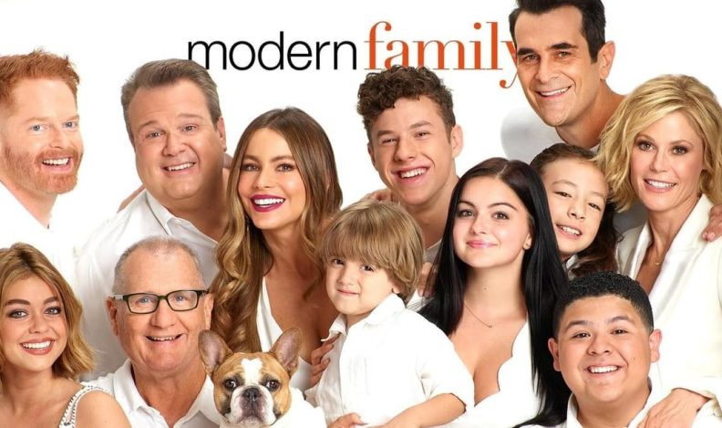

A História da série
Modern Family é uma série de televisão americana do gênero comédia, criada por Christopher Lloyd e Steven Levitan e produzida pela Fox Television Studios. A série foi exibida de 23 de setembro de 2009 a 8 de abril de 2020, com um total de 11 temporadas e 250 episódios.
A série foi aclamada pela crítica e recebeu inúmeros prêmios, incluindo o Emmy Award de melhor série de comédia em cinco anos consecutivos, de 2010 a 2014. A série também foi indicada a 75 Emmys, vencendo 22.
Personagens
A série é filmada em estilo de documentário e narra a vida da família Pritchett-Dunphy-Tucker, em que Jay Pritchett (Ed O'Neill) é o patriarca, casado com a colombiana Gloria Delgado Pritchett (Sofía Vergara), mãe de Manny Delgado (Rico Rodriguez). Jay é pai de Claire Dunphy (Julie Bowen) e Mitchell Pritchett (Jesse Tyler Ferguson), que são casados com Phil Dunphy (Ty Burrell) e Cameron Tucker (Eric Stonestreet), respectivamente.
A série também apresenta os filhos de Claire e Phil, Haley (Sarah Hyland), Alex (Ariel Winter) e Luke (Nolan Gould), e os filhos de Mitchell e Cameron, Lily (Aubrey Anderson-Emmons).
Curiosidades

A série foi filmada em estilo de documentário, com os personagens falando diretamente para a câmera, como se estivessem sendo entrevistados. A série foi filmada em um único cenário, com os personagens se movendo pela casa e interagindo entre si.
A série foi filmada em Los Angeles, Califórnia, e a casa da família Pritchett-Dunphy-Tucker foi filmada em um estúdio de som. A série foi filmada em um cenário de 360 graus, com os personagens se movendo pela casa e interagindo entre si.
A casa da família Pritchett-Dunphy-Tucker
A casa da família Pritchett-Dunphy-Tucker é um dos cenários mais icônicos da série. A casa é uma casa de dois andares, com uma sala de estar, uma cozinha, uma sala de jantar, um escritório, um quarto principal, um quarto de hóspedes, um quarto de Manny, um quarto de Lily, um quarto de Alex e um quarto de Luke.
A casa é decorada com móveis modernos e coloridos, com muitas peças de arte e decoração. A casa tem um quintal com uma piscina e um jardim, onde os personagens passam muito tempo juntos.